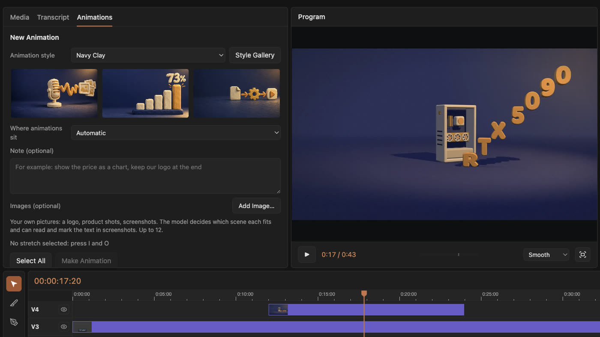
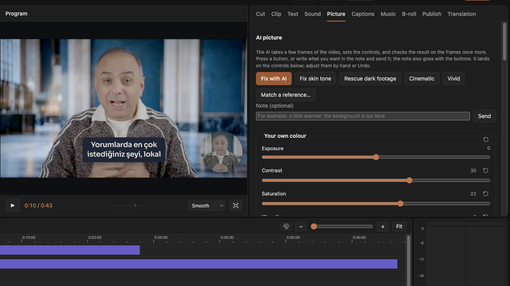
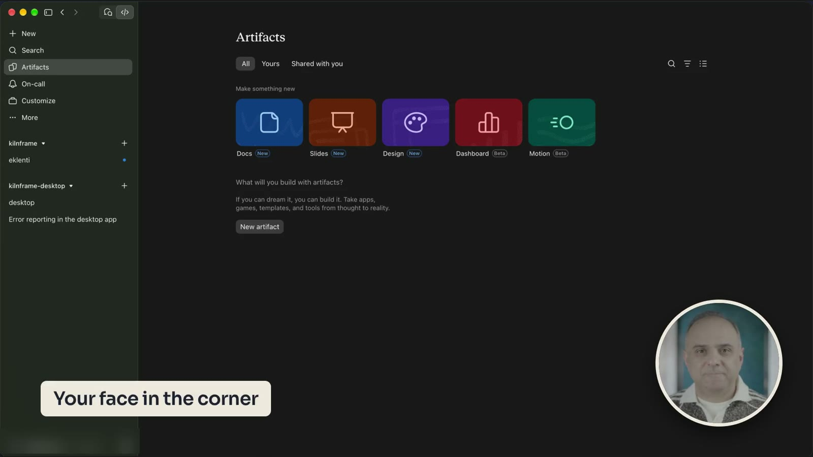
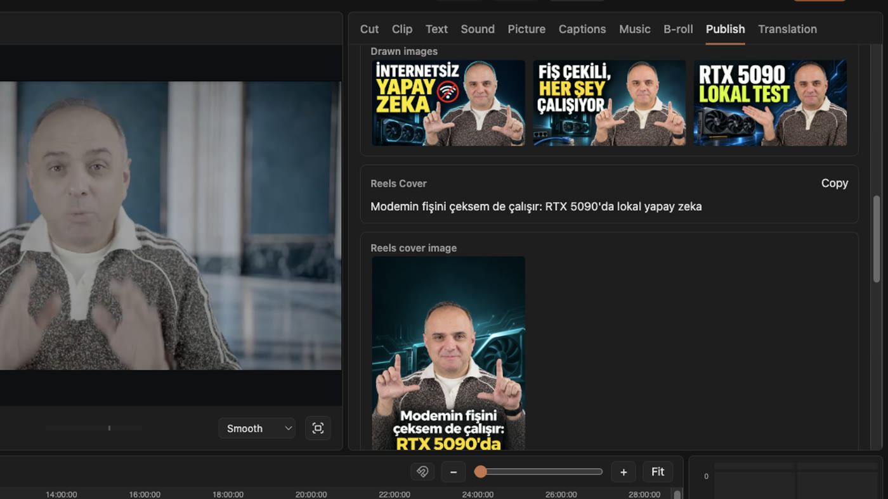
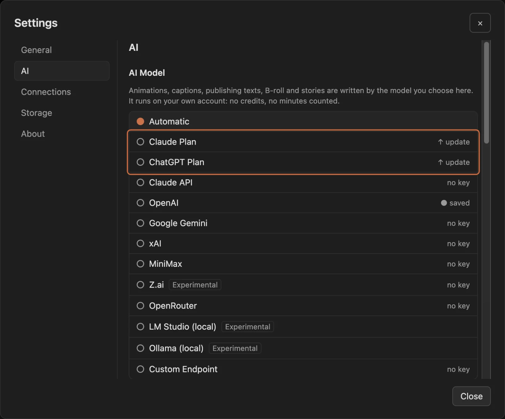

Everything Kilnframe Desktop does.
Cutting, animation, picture, sound, captions and publishing, in one app. Everything the AI does is shown where it happened, and can be changed or undone.

It cuts for you.
Your speech is transcribed on your own computer. The pauses, the ums and the sentences you said twice go; what it is unsure about, it asks you.

| Transcribe | The speech is written down on this computer. No internet needed. | Docs → |
| Cut Pauses, from Gentle to Tight | The silences go in one click, as tight as you like. | Docs → |
| Cut Filler Words | “Um” and “uh” are cut; words that may mean something are asked about. | Docs → |
| Clean Retakes and Asides | Your AI model finds the sentences you said again and the talk not meant for the viewer. | Docs → |
| Unsure cuts and takes | Where it is not sure, you decide: Cut or Keep, and Use This Take. | Docs → |
| Find Similar Passages | Shows where you made the same point twice. | Docs → |
| In and Out | Cut only the stretch you choose. | Docs → |
Edit the video like a text.
Delete a word in the transcript and it is cut from the video. Click it and it comes back.

| Transcript | Delete, bring back and move words; hold the pointer over a cut word to see why it went. | Docs → |
| Correct Words… and Glossary | Fix a name that was heard wrong; captions, translations and chapters use the right spelling. | Docs → |
| Say Again in Voice… | Type the word you said wrong, and it is read again in your own voice. | Docs → |
| Find in the transcript | Find a phrase and go to it. | Docs → |
| Move sentences, Back to Recording Order | Change the order of what you say, in the text. | Docs → |
It writes the animations.
Pick a stretch and Kilnframe writes scenes for what you are talking about: titles, charts, 3D, hand-drawn lines, kinetic type.

| Make Animation | Scenes made for the stretch you chose, timed to the frame. | Docs → |
| Note and Images (optional) | Steer it with a note, your logo or a photo. | Docs → |
| Scene stills: Rewrite Scene, Approve and Create | See each scene before it is drawn, and change the ones you want. | Docs → |
| 137 animation styles, 37 of them 3D | Filter by kind, mood, colour and what they suit. Each style comes with its own sounds. | Docs → |
| Your Own Style | Extract a style from pictures you like. | Docs → |
| Speaker in front | The animation passes behind you. | Docs → |
Picture and colour.
One click for good skin tones and a bright picture; every control by hand when you want it.

| Fix with AI, Fix Skin Tone, Rescue Dark Footage, Match a Reference… | AI colour that you can see, change and undo. | Docs → |
| Match Recordings | Two cameras made to look alike. | Docs → |
| Colour look and Look strength | Ready looks such as Cinematic, as strong as you like. | Docs → |
| Basic correction, Colour curves, Colour wheels, LUT | Every setting by hand. | Docs → |
| Waveform, RGB parade, Vectorscope | Measure the colour while you set it. | Docs → |
| Before/After, Split view | See what a change did, side by side. | Docs → |
| Skin smoothing, Sharpen, Dark edges | The last touches. | Docs → |
| Framing and background: Follow the person, Behind the speaker | The speaker stays in frame, even in a vertical video. | Docs → |
| Zoom in at cuts | A cut looks like a change of camera, not a jump. | Docs → |
Sound.
A clean voice at the right loudness, with music that steps back while you talk.

| Noise Reduction | Takes away the hum of the room. | Docs → |
| Voice isolation (AI) | Keeps the speech and drops the background, on this computer. | Docs → |
| Reduce room echo | Less echo from an empty room. | Docs → |
| Loudness: YouTube (-14 LUFS), Podcast (-16 LUFS) | The right level for the platform, in one choice. | Docs → |
| Ducking | Your music goes down while you speak. | Docs → |
| Presence, Less mud, De-ess, Gate quiet parts | A broadcast voice, track by track or clip by clip. | Docs → |
| Mixer | Speech, effects, music and the main out, with meters. | Docs → |
| Make Music | Music made for the parts of your video, with a Gemini or ElevenLabs key. | Docs → |
| Sound Effects, Make a Sound Effect from Text | Whoosh, pop, click: search, listen, add; or describe one. | Docs → |
| Voice-over, Text to speech | Speak over the video, or have your words read. | Docs → |
| External microphone | A separate microphone recording lines up by its sound. | Docs → |
Made for lessons on screen.
Record your screen and your camera without leaving the app; your face goes in the corner and the picture zooms to where you work.

| Record Screen and Camera… | Screen, camera and microphone, recorded in the app. | Docs → |
| Camera: In a corner, Side by side, Face full screen | The camera and the screen line up by their sound; your face sits in the corner. | Docs → |
| Camera sections: This section, From here on | Move the camera as the lesson goes on. | Docs → |
| Screen zoom: Find Activity and Zoom | Zooms in where you type and click. | Docs → |
| Speed up waits | Installs and loading play faster instead of being cut. | Docs → |
| Mouse highlight, Add Click Sounds | The pointer and the clicks are seen and heard. | Docs → |
| Shapes and stickers | Arrows, highlight boxes, a Subscribe button. | Docs → |
Several cameras and speakers.
Cameras line up by their sound, and the cut follows whoever is speaking.
| Add Cameras and Speakers' Microphones… | Cameras and microphones lined up by their sound. | Docs → |
| Follow Who Speaks | The cut switches to the camera of the person speaking. | Docs → |
| Angles | Every angle in the viewer at once; pick one with a number key. | Docs → |
| Virtual multicam: Frame Whoever Speaks | Close-ups made from a single wide shot. | Docs → |
Captions, text and graphics.
Captions in a click, in a look you pick, and titles that come in and go out with motion.

| Make Captions, Look | Captions from your words, in a ready look. | Docs → |
| Lines: Split at Cursor, Merge with Next | Fix a line, its timing and its emphasis. | Docs → |
| Emphasis, Emoji | Colour the word that matters, add an emoji. | Docs → |
| Import SRT/VTT… | Bring the captions you already have. | Docs → |
| Text templates: Headline, Lower third, Chapter card… | Titles with their own way in and out. | Docs → |
| Brand kits | Intro, outro, colours, fonts and caption look, ready in every project. | Docs → |
| Add Font… | Use your own fonts. | Docs → |
Ready to post.
Shorts from the strongest moments, a title, description and chapters for each video, and translations.

| Find Short Clips | Vertical clips from a long video that hold up on their own. | Docs → |
| Save as Sequence, Vertical Copy (9:16) | Edit a short as a sequence of its own. | Docs → |
| Write Publishing Texts | Titles, a description with chapters, tags and cover ideas. | Docs → |
| Translation, Dub | Captions in other languages, read aloud if you like. | Docs → |
| Make a Story From a Topic | No recording? A narrated draft from a topic. | Docs → |
A real editor.
The tools, tracks and keys of the program you are used to, under all of the above.

| Select, Razor, Rate Stretch, Roll, Slip, Pen, Text | The editing tools you know, with their keys. | Docs → |
| Add Video Track, Lock, Mute | As many tracks as you need. | Docs → |
| Add Cross Dissolve, Add Dip to Black | Transitions, and crossfades for sound. | Docs → |
| Motion and keyframes | Animate size, place, opacity, rotation and crop. | Docs → |
| Speed…, Reverse, Freeze Frame, Slow motion | Speed changes, smooth slow motion too. | Docs → |
| Green screen | Take away the background colour. | Docs → |
| Blur faces and areas | Pick a face; the blur follows it. | Docs → |
| Picture in picture, Split screen | Any two clips side by side. | Docs → |
| Adjustment layer | One colour change over many clips. | Docs → |
| Make Compound Clip, Sequences | Sequences inside sequences. | Docs → |
| Find Beats, markers | Cut to the beat of the music. | Docs → |
| Overlays, handles in the picture | Safe areas and the Shorts buttons; place things by dragging them in the viewer. | Docs → |
| Find in Footage | Type “a laptop on a desk” and find the shot. | Docs → |
Export.
The platform's size ready, several platforms at once, with your graphics card.

| Size: YouTube, YouTube Shorts, Instagram Reels, TikTok | The platform's size, ready. | Docs → |
| Codec: H.264, HEVC / H.265, ProRes; Transparent background | For sharing, for the archive, or to keep editing. | Docs → |
| Also export | Several platforms in one go. | Docs → |
| Subtitle file, Chapters in the file | Ready to upload to YouTube. | Docs → |
| GIF, Export Frame… | A short loop or a single frame. | Docs → |
| Hardware acceleration | Fast on NVIDIA, AMD, Intel and Apple. | Docs → |
Your own AI, the Assistant and MCP.
The AI work runs on your own account. No credits to buy from us.

| Claude Plan, ChatGPT Plan | Your subscription covers it; nothing extra to pay. | Docs → |
| API Key, LM Studio, Ollama | With a key, or entirely on your computer with a local model. | Soon |
| Assistant | Ask for a change in your own words; it does it step by step. | Docs → |
| What the AI just did | Every AI step is shown, and Undo takes it back. | Docs → |
| Connect AI assistants (MCP) | Claude, ChatGPT, Cursor and Codex can edit your project. | Soon |
Safe, and set up your way.
Nothing is lost, nothing heavy starts without asking, and the keys are the ones you know.

| Saved by itself, History: Steps, Saved versions | No step is lost; go back to an earlier version. | Docs → |
| Find Media…, Collect Project… | Find moved files; gather a project into one folder. | Docs → |
| The program you are used to: Premiere Pro, Final Cut Pro, DaVinci Resolve, CapCut | The layout and the keys you know. | Docs → |
| Workspaces | Move the panels and keep your layout. | Docs → |
| Keyboard shortcuts, Edit Shortcuts | Change any key. | Soon |
| Running work, Asked work | Heavy work asks before it starts and can be stopped at any time. | Docs → |
Try it first.
Your videos stay on your computer: transcription, cutting and export run on your machine, and AI work sends only the text and frames a job needs to the model you choose. See How Kilnframe uses AI and the privacy policy.
Mac · Windows (Microsoft Store, Beta) · Linux (Beta). Every feature is open for 14 days, without a card (Licence and trial).